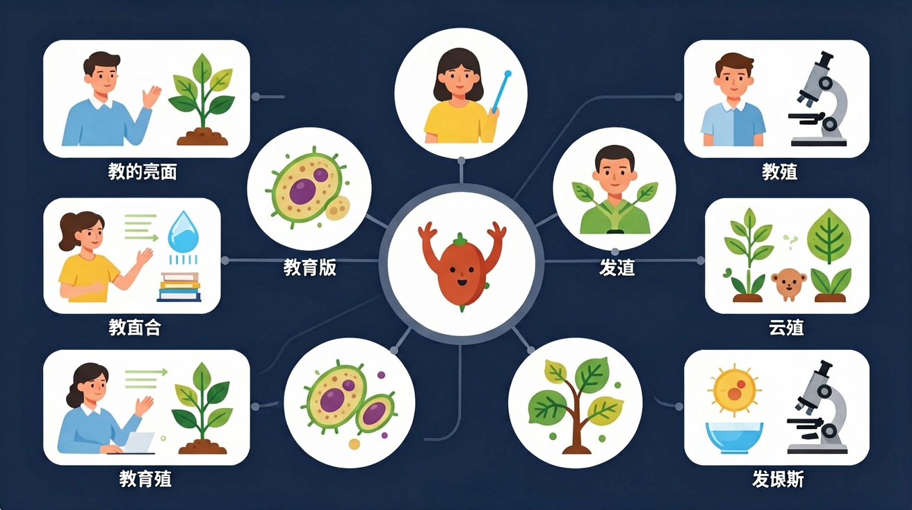

受精·胚胎发育·青春期——生命的诞生与成长

🎯 能说出男女生殖系统的主要结构名称
🎯 能判断胚胎发育各阶段的关键特征
🎯 能分析青春期第二性征的激素调控原理
❓ 为什么男生变声期声音会变粗？
❓ 双胞胎是怎么形成的？长得一模一样吗？
❓ 妈妈怀孕时肚子里的宝宝怎么呼吸？
学完这一课，这些问题你都能自信地回答。
受精作用发生的部位是？
下列不属于第二性征的是？
精子与卵细胞在输卵管结合，形成受精卵（合子）。含有来自父母双方的遗传物质。
受精卵进行有丝分裂（卵裂），细胞数量不断增多，沿输卵管向子宫移动。
胚泡进入子宫腔，植入子宫内膜，与母体建立联系，开始从母体获取营养。
主要器官系统基本形成，从胚胎发育为胎儿，通过胎盘和脐带从母体获取营养。
胎儿发育成熟，经子宫收缩，通过产道（阴道）娩出，新生命诞生。
通过3D模型拆解生殖系统各器官空间关系
用动画演示受精卵着床与胎盘形成过程
对比无性生殖与有性生殖的能量消耗差异
观察不同孕周胚胎标本的形态变化
设计青春期营养方案促进骨骼发育
统计班级同学出现变声/月经的年龄
将下列发育阶段拖入正确的顺序位置
1. 精子与卵细胞结合（受精）的场所是（ ）
2. 胎儿通过什么与母体进行物质交换（ ）
3. 关于青春期的说法，正确的是（ ）
4. 下列关于人类受精卵的说法正确的是（ ）
先独立作答，再点选项查看对错与错因。
下列哪项是男性生殖系统的主要功能？
受精作用通常发生在女性生殖系统的哪个部位？
青春期最显著的变化不包括
胚胎发育时通过____从母体获得氧气和养料
答案：胎盘
胎盘是母体与胎儿物质交换的特殊器官
女性每月排出的生殖细胞叫____
答案：卵细胞
卵巢每月排卵一次，是女性生殖细胞
✅ 脐带运输物质，肺才是呼吸器官
💡 将物质交换与呼吸功能混淆
✅ 异卵双胞胎性别可能不同
💡 不了解同卵/异卵形成机制差异
口诀：精子卵子相遇忙，输卵管里成双对，子宫内膜是温床，十月怀胎娘最累
类比：受精像钥匙开锁，只有匹配的精子才能激活卵子
| 概念 | 定义 | 位置/说明 |
|---|---|---|
| 受精 | 精子与卵细胞结合 | 输卵管 |
| 着床（植入） | 胚泡嵌入子宫内膜 | 受精后约1周 |
| 胎盘 | 母胎物质交换器官 | 子宫内，分娩后排出 |
| 第二性征 | 青春期出现的性别特征 | 受性激素调控 |
【中考真题】试管婴儿技术中，受精卵最初3天发育场所是？
若某女性输卵管堵塞，可能影响？
移植果树时采用嫁接属于？